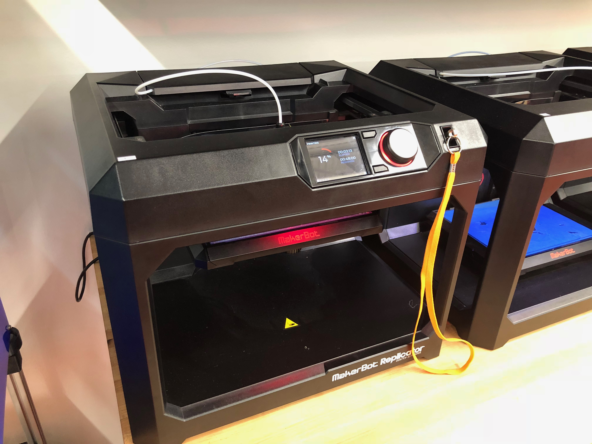
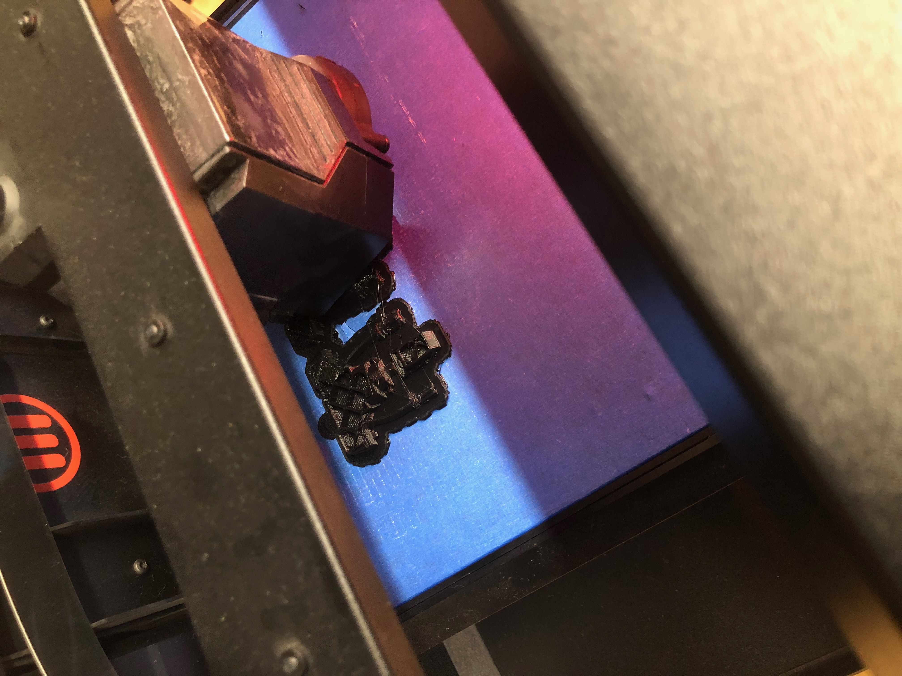
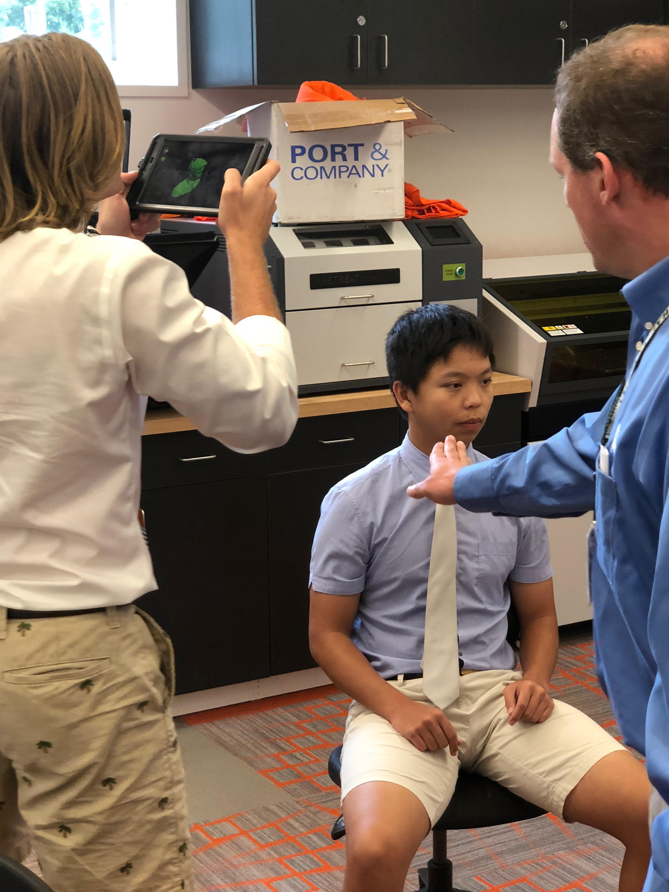
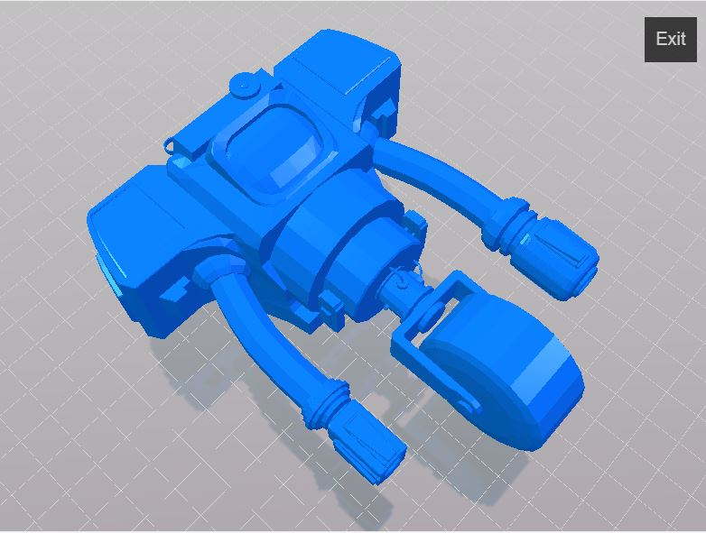
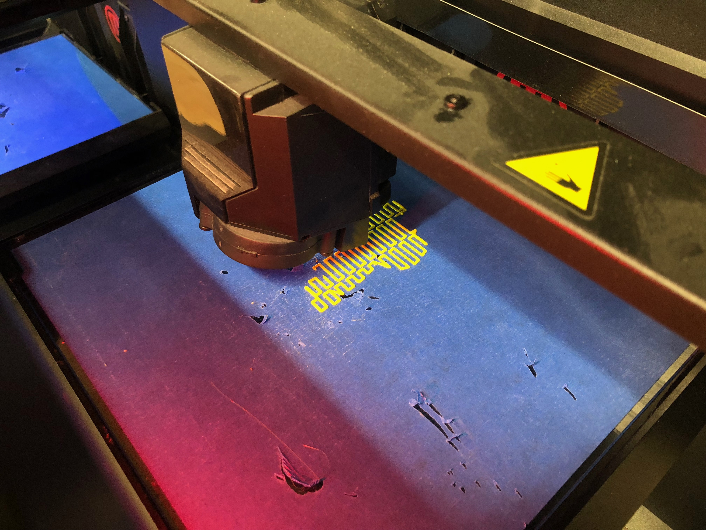
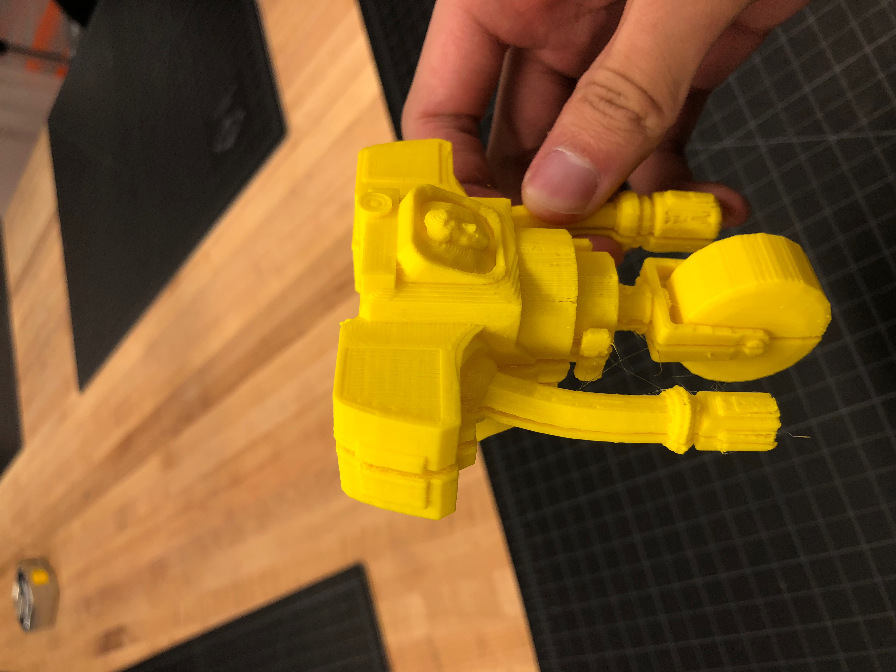
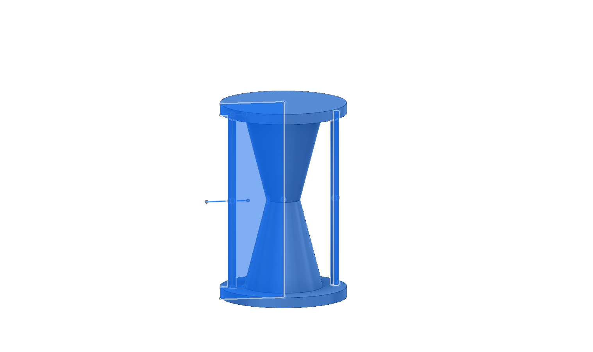
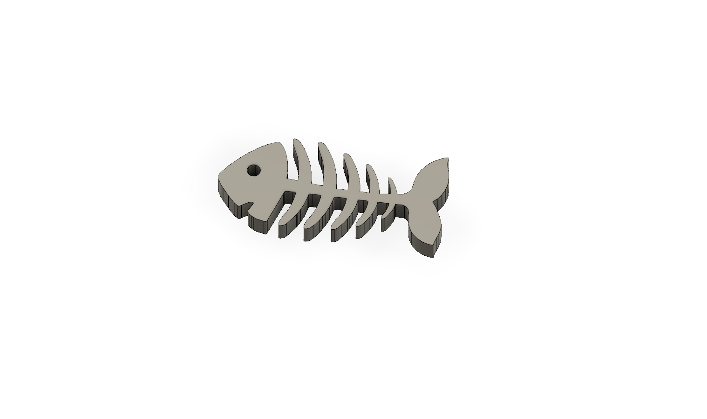
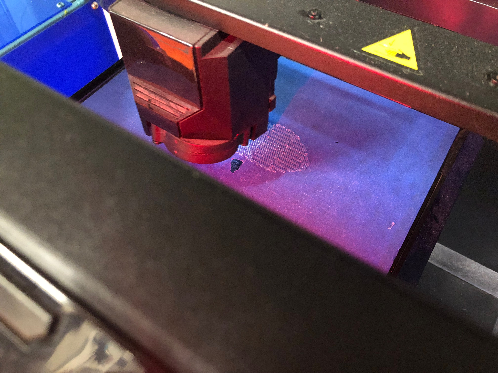
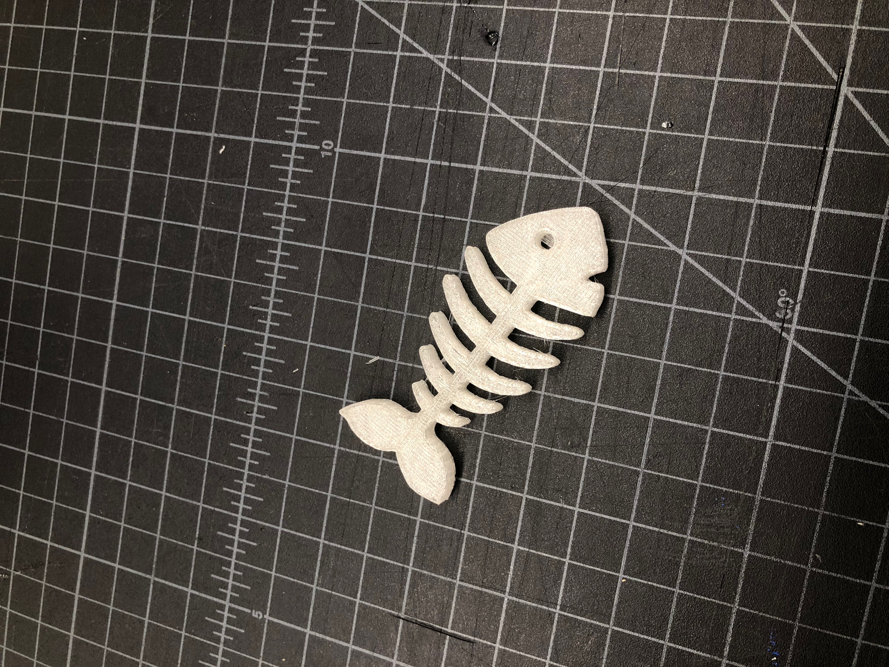

|  |  |  |  |  |  |  |  |  |  |
|---|---|---|---|---|---|---|---|---|---|
| This week, we are using MakerBot Replicator 5th Gen 3D printer for our projects. The size limitation of Makerbot is 25.2 L x 19.9 W x 15.0 H centimeters. It uses the process of additive manufacturing, which is laying layers of materials on top of one another. As a result, Makerbot also has the limitation that if the layer is larger than the layer below, the angle formed by their edges can not be greater than 45°. Otherwise, the material will lose its support and fall. | The advantage of Makerbot over FormLabs, a 3D printer that uses stereolithographic, is its price. The Makerbot printer itself is about 500 dollars cheaper than a FormLabs printer, and the material used by Makerbot, PLA plastic, is only one-third of the price of filament used by FormLabs. | The first project is to combine a model and my own head. My head is scanned by a tablet held by a person. He would go around me while staying a certain distance away from me to create a model of my head. The picture shows the process with my friend Ding, not me, but the idea is the same. | Then, I found a model of securitron from game Fallout New Vegas created by TheConanRider from thingiverse.com. It is cut in half to reduce the amount of support required. I meshed my face in the center of the screen of securitron and combined the two stl files. | After finishing the model, I let the printer print it, and it takes about 4 hours. The printer will start from building a base and then build the model on the base. | The next project is to create something that can not be made subtractively. I created a hourglass because the empty area under its cap can not be reached with subtractive manufacturing. Unfortunately, Fusion 360 showed that my account was expired so I did not get to save the file and print it. | The last project is to create something useful. I chose to make a 3D fishbone so that I can wrap my data lines around it because I have a lot of them, and it has become pretty messy. I started from downloading a fishbone vector from the Internet. I traced it in CorelDraw and converted its hairline to a SVG file. Then, I took this file to Fusion 360 and extruded it to make the model. | The printing process is the same except that I have a different color this time. | Click here to download all original files. |